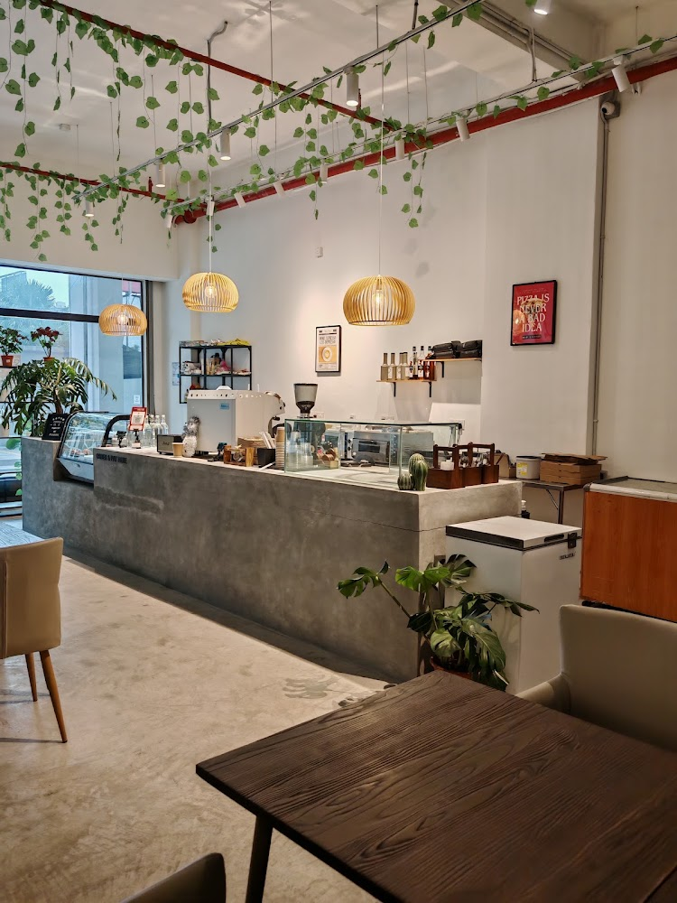

Xofi.Trg
Brewing the freshest heritage coffee daily, crafted with passion for students and coffee lovers alike.
Our Menu
- Classic Kopi O
- Traditional robust black coffee sweetened with raw cane sugar - RM 3.50
- Roti Bakar Kaya Butter
- Crispy toasted bread with fragrant pandan kaya and cold butter slices - RM 4.00
- Half-Boiled Eggs
- Two perfectly soft-boiled eggs served with white pepper and dark soy sauce - RM 3.00
- Iced Cham
- A harmonious blend of local black tea and freshly roasted coffee with condensed milk - RM 4.50
How to Order
- Find an available table and take note of your table number.
- Browse our physical menu or counter board and select your meals.
- Proceed to the cashier counter to place your order and make a payment.
- Collect your drink buzzer and relax while our crew prepares your order fresh.
Facilities
- Free Wifi
- Clean Surau
- Comfortable Chair
What Our Customers Say
"The best Kaya toast and iced coffee near campus! I love it so muchh."
Our Ambience

Contact Information
Xofi.Trg
MBKT375-F, Jalan Sultan Omar,
20300 Kuala Terengganu,
Terengganu, Malaysia
Email: hr.kofi.trg@gmail.com
Location: View Our Location on Google Maps